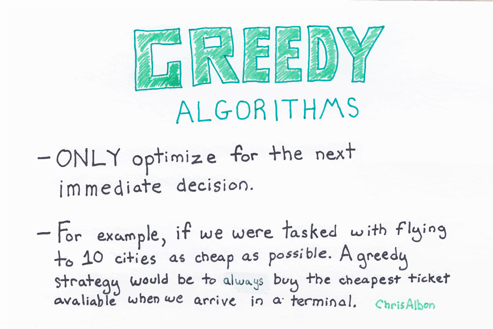
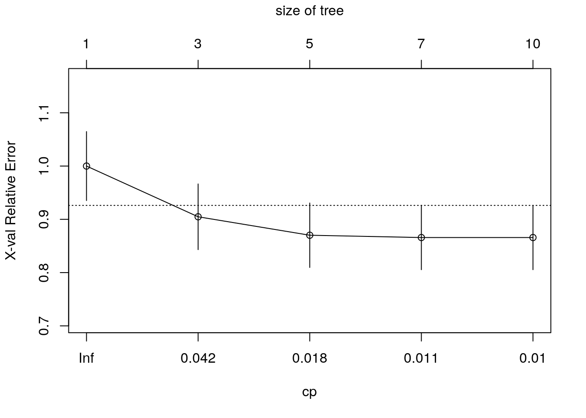
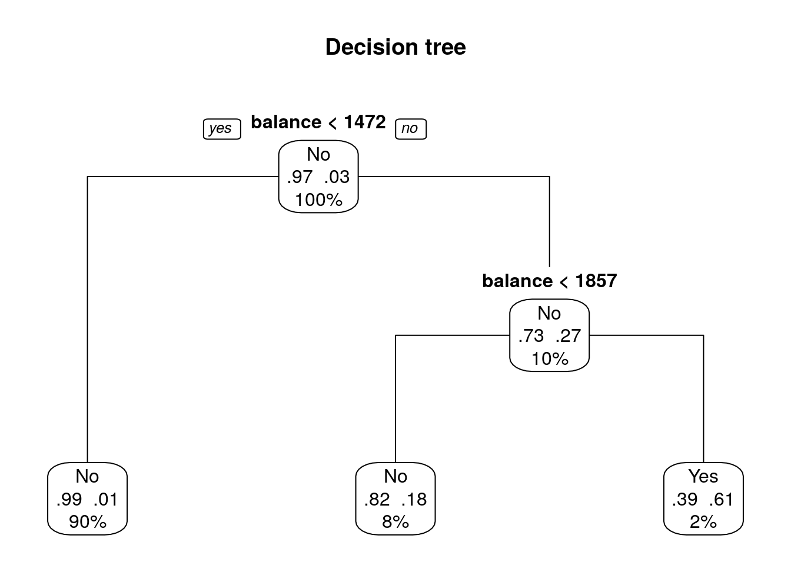

Phương pháp decision trees (cây quyết định) là một thuật toán rất quan trọng, cho phép dự báo các biến đầu ra dựa trên các nguyên tắc phân nhóm (spliting rules) rẽ nhánh theo từng biến. Phương pháp này có thể áp dụng đối với cả hai bài toán hồi quy (regression) và phân loại (classification).
Trong một cây quyết định, có các thành phần sau:
node: là điểm rẽ nhánh
leaf: là quyết định phân loại cuối cùng
Lưu ý
Thuật toán cây quyết định là một thuật toán rất quan trọng, là nền tảng mở rộng cho các kỹ thuật phân loại, dự báo khác như random forest, xgboost hay gbm
Các thuật toán thuộc họ cây quyết định sẽ dự báo tốt với nhóm dữ liệu không thuần nhất và có độ biến động và đa dạng về giá trị của các biến đầu vào
22.2 Cây phân loại (classification tree)
22.2.1 Tổng quan
Cây quyết định phân loại (classification tree) có biến muốn dự báo là biến rời rạc hay biến định tính (categorical variable).
§
Khi xây dựng mô hình, cây quyết định sẽ tự động lựa chọn các điểm rẽ nhánh để sao cho sai số là nhỏ nhất. Hiểu đơn giản, cây quyết định sẽ rẽ nhánh để số kết quả đầu ra tại mỗi lá (leaf) là thuần nhất.
Xem xét 2 trường hợp sau:
Trường hợp 1 - tại lá A có 5 giá trị, 3 class 1, 2 class 0
Trường hợp 2 - tại lá B có 5 giá trị, 4 class 1, 1 class 0
Trường hợp 3 - tại lá C có 5 giá trị, 5 class 0
Như vậy, độ thuần nhất (purity) tại lá C sẽ tốt hơn là B và lá B tốt hơn lá C.
§
Sai số (hay hàm cost function) có thể có rất đa dạng với thuật toán cây quyết định. Trong đó hay dùng nhất bao gồm
classification error: tỷ lệ các quan sát số ít tại một lá. Ví dụ, tại lá A có 5 giá trị, 3 class 1, 2 class 0 thì tỷ lệ sai số là \(2/5 = 40\%\)
\[\epsilon = 1 - \max_k(\widehat{p}_{mk})\]
Ở đây \(p_{mk}\) - tỷ trọng quan sát trên tập dữ liệu training trong vùng thứ m từ class thứ k.
Đây là một chỉ số về tổng variance qua K classes. Dễ nhận thấy rằng chỉ số Gini sẽ càng nhỏ nếu pmk tiếp cận 0 hoặc 1. Vì lý do đó chỉ số Gini được coi là thước đo độ đồng nhất của node (node purity).
pmk nhận giá trị từ 0 đến 1, nên -pmk*log(pmk) sẽ không âm. Cross-entropy sẽ tiếp cận đến 0 nếu tất cả các giá trị pmk tiệm cận đến 0 hoặc 1. Vì vậy, cũng giống như chỉ số Gini, cross-entropy sẽ mang giá trị nhỏ nếu như node thứ m đồng nhất.
§
Mô hình cây quyết định rất dễ bị overfitting do có thể rẽ nhánh vô hạn để mô hình phân loại hoàn hảo. Do đó, khi xây dựng mô hình cần phải tuning để đảm bảo việc cân đối giữa chất lượng mô hình khi huấn luyên và độ phức tạp của cây quyết định.
Với mô hình cây quyết định, số lần phân nhánh (số node hay nplit) là yếu tố chính ảnh hưởng đến độ phức tạp của mô hình.
Lưu ý
Mô hình cây quyết định mang tính greedy, nghĩa là việc tối ưu hóa phân nhánh tại mỗi node chỉ tối ưu hóa tại chính bước đó. Do đó, thuật toán chưa chắc đã đảm bảo yếu tố tối ưu hóa tổng thể

22.2.2 Thực hành
Để thực hành xây dựng classification tree trên R, ta sử dụng dữ liệu Default trong package ISLR có sẵn trong R để dự báo khách hàng nào sẽ không trả được nợ thẻ thẻ tín dụng.
Dữ liệu bao gồm thông tin trả nợ thẻ tín dụng của 10,000 khách hàng:
default: Đánh dấu khách hàng có khả năng trả nợ hay không
Yes: Không trả được nợ
No: Có trả được nợ
student: Đánh dấu khách hàng là sinh viên hay không
Yes: Sinh viên
No: Không phải sinh viên
balance: Trung bình dư nợ còn lại khách hàng phải trả
income: Thu nhập của khách hàng
# Datalibrary(ISLR)data("Default")# Chia dữ liệu thành 2 tập: train/testset.seed(1234)train <-sample(nrow(Default), 0.7*nrow(Default))df.train <- Default[train,]df.validate <- Default[-train,]# Biến đầu ra của dữ liệu huấn luyệntable(df.train$default)
No Yes
6769 231
# Biến đầu ra của dữ liệu kiểm địnhtable(df.validate$default)
No Yes
2898 102
§
Trước tiên, chúng ta sẽ xây dựng một cây quyết định với tập dữ liệu huấn luyện, sử dụng hàm rpart().
# Classical decision treelibrary(rpart)set.seed(1234)# 1. Grows the treedtree <-rpart(default ~ ., data = df.train,method ="class", # biến đầu ra - rời rạcparms=list(split="information"))# Xem kết quả mô hìnhprint(dtree)
Kết quả cho chúng ta thấy thông tin về sai số dự báo đối với mỗi kích thước khác nhau của cây.
cp - tham số đánh giá độ phức tạp của mô hình (complexity parameter) dùng để penalize larger trees
nsplit - số lần phân nhóm (number of branch splits) mô tả kích thước của cây. Một cây với n splits sẽ có n+1 terminal nodes
rel error - tỷ lệ sai số (error rate) của cây đối với từng kích thước được xác định trên tập dữ liệu training.
xerror - cross-validated error dựa trên 10-fold cross validation (cũng dựa trên dữ liệu training)
xstd - sai số chuẩn (standard error) của cross validation error
Chúng ta có thể sử dụng hàm plotcp() để xem mối quan hệ giữa cross-validated error (xerror) và tham số complexity (CP). Một sự lựa chọn tốt cho kích thước của cây là cây nhỏ nhất mà cross-validated error nằm trong khoảng giá trị 1 standard error của cross-validated error nhỏ nhất
# Plot the cross-validated error against the complexity parameterplotcp(dtree)

Ta lựa chọn cp cao nhất nhưng nhưng dưới đường nằm ngang và phân nhánh 3 lần.
# 2. Prunes the treedtree.pruned <-prune(dtree, cp =0.042)print(dtree.pruned)
# Vẽ biểu đồlibrary(rpart.plot)prp(dtree.pruned,type =1, # Draws the split labels below each nodeextra =104, # Includes the probabilities for each class, along with the percentage of observations in each nodefallen.leaves = T, # Displays the terminal nodes at the bottom of the graphmain ="Decision tree" )

Đọc kết quả mô hình
Tập dữ liệu huấn luyện ban đầu có 97% là default = No (khách hàng trả được nợ), 3% là default = Yes (không trả được nợ)
Với điều kiện phân nhánh đầu tiên balance < 1472 (tức dư nợ còn lại phải trả < 1472):
90% khách hàng thỏa mãn điều kiện balance < 1472 (sẽ được phân loại về nhóm default = No - trả được nợ), trong đó :
99% là default = No (trả được nợ)
1% là default = Yes (không trả được nợ)
10% khách hàng không thỏa mãn điều kiện balance < 1472, trong đó:
73% là default = No (trả được nợ)
27% là default = Yes (không trả được nợ)
Sau đó, đối với 10% khách hàng không thỏa mãn điều kiện balance < 1472 lại được tiếp tục phân nhánh nhỏ hơn với các điều kiện tương tự
Dự báo trên tập mới
# Phân loại những quan sát mớidtree.pred <-predict(dtree.pruned, df.validate,type ="class")# So sánh kết quả dự báo và thực tếdtree.perf <-table(df.validate$default, dtree.pred,dnn =c("Actual", "Predicted") )dtree.perf
Predicted
Actual No Yes
No 2877 21
Yes 55 47
22.3 Cây hồi quy (regression tree)
Tương tự như mô hình cây phân loại, cây quyết định hồi quy sẽ phân nhánh dữ liệu đầu vào và dự báo kết quả đầu ra ở mỗi lá. Tuy nhiên, sự khác biệt nằm ở chỗ, tất cả các lá đầu ra trong cây hồi quy sẽ có cùng một giá trị dự báo là một giá trị của biến số liên tục.
§
Mô hình cây hồi quy sẽ tối thiểu hóa sai số (Residual Sum of Squared Error) tại các node như sau:
Trong đó yRj là trung bình kết quả của những quan sát trên tập dữ liệu training trong box thứ j.
Tuy nhiên việc tính toán và tối ưu sai số trên sẽ rất phức tạp. Cây quyết định sẽ triển khai theo hướng đi từ trên xuống dưới hay còn gọi là recursive binary splitting, bao gồm 2 thuộc tính - topdown và greedy.
top-down: bắt đầu từ phần đỉnh của cây (nơi mà tất cả các quan sát thuộc một nhóm ban đầu), sau đó sẽ phân nhóm các quan sát, mỗi sự phân nhóm sẽ chia làm 2 nhánh (branches) mới xuống phía dưới.
greedy: mỗi bước trong quá trình xây dựng cây, sự phân nhóm tốt nhất (best split) sẽ được sử dụng.
§
Thực hành với R
library(ISLR)library(tidyverse)data("Hitters")names(Hitters) <-names(Hitters) %>% tolower# Lấy 3 biến: `years`, `hits`, `salary`data <- Hitters %>%select(years,hits,salary)data_new <- data %>%# Loại bỏ giá trị missing ở biến `salary`filter(!is.na(salary)) %>%# log-transformmutate(salary =log(salary))data_new %>% head
Đơn giản, dễ thực hiện, không yêu cầu và đòi hỏi chuẩn hóa dữ liệu đầu vào & xử lý với các trường hợp thiếu dữ liệu (missing data)
Có khả năng xử lý khi tồn tại quan hệ phi tuyến tính
Nhược điểm:
Thiếu ổn định (non-robust) với các tập dữ liệu khác nhau. Với một sự thay đổi nhỏ trong tập dữ liệu, có thể dẫn đến thay đổi mô hình cây quyết định cuối cùng.
Dễ bị overfitting trong quá trình huấn luyên
Dễ bị ảnh hưởng với class chiếm đa số trong tập dữ liệu
Thuật toán mang tính tối ưu hóa tại từng bước (local optimization) nhiều hơn là tối ưu hóa tổng thể (global optimization) do đặc thù greedy của thuật toán
§
Để khắc phục các nhược điểm trên, các kỹ thuật như bagging hay boosting cho phép gộp nhiều kết quả của các cây quyết định rời rạc sẽ đem lại kết quả vượt trội
22.5 Tài liệu tham khảo
Introduction to Statistical Learning with R - Chapter 8 - Tree Based Method